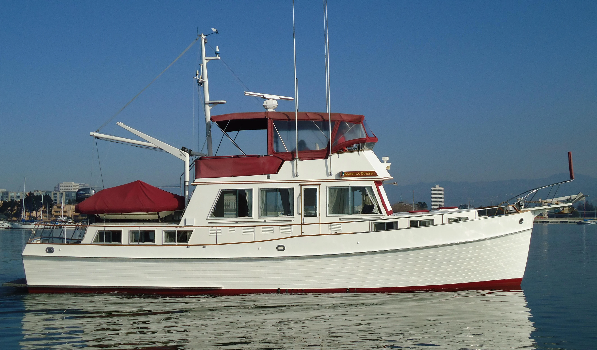

Grand Banks 49 Motor Yacht
1986–1999
The Grand Banks 49 Motor Yacht is a large aft-cabin cruising yacht with a full-beam owner stateroom, substantial guest accommodation and twin diesel shaft propulsion. It is materially larger and heavier than the Classic models below 46 feet and was designed for long-duration cruising with extensive stores and onboard systems. Individual boats vary significantly in layout, tankage, engines and later equipment.

- LOA
- 50′ 6″ / 15.39 m
- LWL
- 48′ 9″ / 14.86 m
- Beam
- 15′ 5″ / 4.7 m
- Draft
- 5′ 2″ / 1.57 m
- Hull behaviour
- Semi-Displacement
- Fuel
- Diesel
- Propulsion
- Shaft
- Engine configuration
- Twin Inboard
- Boat family
- Motor Yacht
- Construction
- Fiberglass
Best for
- Experienced owners planning extended or liveaboard cruising
- Couples requiring substantial private guest accommodation
- Buyers prepared for yacht-scale operating and refit costs
Trade-offs
- Very high dockage, haul-out, fuel and maintenance costs
- Large systems inventory demands organized preventive maintenance
- Dimensions and displacement restrict facilities and routes
- Actual tank capacities and loaded displacement vary between boats and sources
Known concerns
- No model-specific concern has been promoted to B-Atlas’s evidence threshold. This does not mean the model has no age-, condition- or hull-specific risks.
Inspection focus
- Verify actual tank capacities, loaded displacement and machinery specification from vessel documents
- Inspect fuel tanks, exhaust systems, generators, stabilizers and electrical distribution
- Inspect teak decks, windows and exterior joinery for moisture and deferred maintenance
- Confirm haul-out capacity, dockage, air draft and winter-storage feasibility
Continue researching
Related boat models
47.08 ft · Semi-Displacement
49 ft · Semi-Displacement
48.83 ft · Displacement
42.58 ft · Semi-Displacement
46.83 ft · Semi-Displacement
44.42 ft · Displacement
About this record
B-Atlas preserves uncertainty: missing information remains unknown rather than being treated as a negative. Specifications and guidance describe the model record; individual boats can differ by year, equipment, refit and condition.